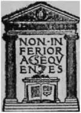

Leonardo Da Vinci: A Psychosexual Study Of An Infantile Reminiscence | by Sigmund Freud
Leonardo da Vinci (1452-1519) was admired even by his contemporaries as one of the greatest men of the Italian Renaissance. Still, even then he appealed as mysterious to them as he now appears to us. Psychoanalytic investigation of him is included in this volume
| Title | Leonardo Da Vinci: A Psychosexual Study Of An Infantile Reminiscence |
| Author | Sigmund Freud |
| Publisher | Moffat, Yard & Company |
| Year | 1916 |
| Copyright | 1916, Moffat, Yard & Company |
| Amazon | Leonardo da Vinci: A Psychosexual Study of an Infantile Reminiscence |
By Professor Dr. Sigmund Freud, LL.D. (University Of Vienna)
Translated By A. A. Brill, Ph.B.,2 M.D.
Lecturer in Psychoanalysis and Abnormal Psychology, New York University
 Chapter I. Leonardo Da Vinci
Chapter I. Leonardo Da Vinci- When psychoanalytic investigation, which usually contents itself with frail human material, approaches the great personages of humanity, it is not impelled to it by motives which are often attributed ...
- Leonardo Da Vinci. Part 2
- Many of Leonardo's later admirers have attempted to wipe off the stain of unsteadiness from his character. They maintained that what is blamed in Leonardo is a general characteristic of great artists....
- Leonardo Da Vinci. Part 3
- If a biographical effort really endeavors to penetrate the understanding of the psychic life of its hero it must not, as happens in most biographies through discretion or prudery, pass over in silence...
- Leonardo Da Vinci. Part 4
- Leonardo was called die Italian Faust on account of his insatiable and indefatigable desire for investigation. But even if we disregard the fact diat it is the possible retransformation of the desire ...
- Leonardo Da Vinci. Part 5
- The application of diese assumptions to the case of the predominant investigation-impulse seems to be subject to special difficulties, as one is unwilling to admit that this serious impulse exists in ...
- Chapter II
- As far as I know Leonardo only once interspersed in his scientific descriptions a communication from his childhood. In a passage where he speaks about the flight of the vulture, he suddenly interrupts...
- Chapter II. Part 2
- Let the reader be patient for a while and not flare up with indignation and refuse to follow psychoanalysis because in its very first applications it leads to an unpardonable slander of the memory of ...
- Chapter II. Part 3
- When we proceed furdier we come upon a communication which may raise to a certainty the probability that Leonardo knew die vulture fable. The erudite editor and commentator of Horapollo remarked in co...
- Chapter III
- The element of the vulture represents to us the real memory content in Leonardo's childhood fantasy. The association into which Leonardo himself placed his fantasy direw a bright light on the importan...
- Chapter III. Part 2
- One will not gain a correct understanding of the activities of the infantile sexuality, and probably will consider these communications unworthy of belief, if one does not relinquish the attitude of o...
- Chapter III. Part 3
- Following this primary stage, a transformation takes place whose mechanisms we know but whose motive forces we have not yet grasped. The love of the mother cannot continue to develop consciously so di...
- Chapter III. Part 4
- In this diary, which like the diaries of other mortals often skims over the most important events of the day widi only a few words or ignores them altogedier, one finds a few entries which on account ...
- Chapter IV
- The vulture fantasy of Leonardo still absorbs our interest. In words which only too plainly recall a sexual act (and has many times struck against my lips with his tail), Leonardo emphasizes the int...
- Chapter IV. Continued
- But the case could have been different. The need for a deeper reason for the fascination which the smile of Gioconda exerted on die artist from which he could not rid himself has been felt by more dia...
- Chapter V
- Among the entries in Leonardo's diaries there is one which absorbs the reader's attention through its important content and on account of a small formal error. In July, 1504, he wrote: Adi 9 Lugli...
- Chapter V. Part 2
- However, if the imitation of his father hurt him as an artist, his resistance against the father was the infantile determinant of his perhaps equally vast accomplishment as an artist. According to Mer...
- Chapter V. Part 3
- But why do so many people dream that they are able to fly? Psychoanalysis answers diis question by stating that to fly or to be a bird in die dream is only a concealment of another wish, which one can...
- Chapter VI. Sexual Life of Leonardo da Vinci
- It would be futile to delude ourselves that at present, readers do not find every pafhography82 unsavory. This attitude is excused with the reproach that from a pathographic study of a great man one n...
- Chapter VI. Continued
- From his earliest childhood Leonardo appears to us as an artist, a painter, and sculptor, thanks to a specific talent which was probably enforced by die early awakening of the impulse for looking in t...
- Endnotes
- 1 [English translation of Fine Kindheitserinnerung des Leonardo da VinciOriginally published in Schriften zur Angewandten Seelen-kunde herausgegeben von Prof. Dr. Sigm. Freud, siebentes Helt (Wien und...
- Endnotes. Continued
- 38 See the illustrations in Lanzone loc. tit. T. CXXXVI-VIII. 39 v. Romer loc. tit. 40 [Goddess of Lower Egypt, associated with the ancient city of Sais — ed.] 41 Cf. the observations in the Jah...